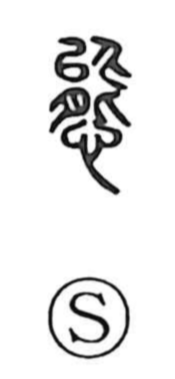

態

Kun: wazato | On: tai
state ・ condition ・ attitude ・ demeanor ・ intentional
Explanation
Shirakawa views 態 as a phono-semantic character: the element 能, originally meaning “ability,” supplies the sound, carrying an older value that aligned with tai (as in 耐), while the whole graph came to express a deliberately adopted outward bearing. It thus points to the intentional show one puts on—the studied attitude or manner through which feelings and thoughts are revealed in action. From this core sense it is used for figure and form (sugata, katachi), the look or state of things (yosu), and gestures or conduct (shigusa), and it underlies compounds such as taisei, taido, yodai, jotai, and jittai. In native usage it yields wazato, “on purpose,” with the nuance of something affected or contrived.